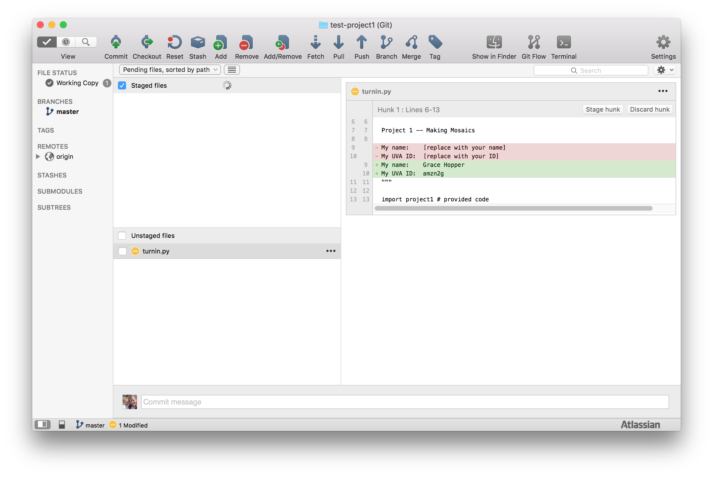

Project 1: Making Mosaics
Collaboration Policy - Read Carefully
For this assignment, you may discuss the assignment with anyone you want and get help from others, so long as it is help in the spirit of learning how to do things yourself not getting answers you don't understand. You should understand everything you turn in for the assignment well enough to be able to produce it completely on your own.
Remember to follow the course pledge you read and signed at the beginning of the semester. For this assignment, you may consult any outside resources, including books, papers, web sites and people, you wish except for materials from previous cs1120 courses. You may consult an outside person (e.g., another friend who is a CS major but is not in this class) who is not a member of the course staff, but that person cannot type anything in for you and all work must remain your own and outside sources should never give you specific answers to problem set questions.
If you use resources other than the class materials, lectures and course staff, you should document this in your turn-in.
You are strongly encouraged to take advantage of the scheduled help hours and office hours for this course.
Purpose
- Introduce divide-and-conquer problem solving.
- Provide exposure to recursive definitions and functions as parameters.
- Provide experience reading a Python program.
- Learn to use and create functions.
- Gain familiarity with the Python programming environment and programming language.
- Make a delightful picture!
Background
{kind=link}
A mosaic is a picture made up of lots of smaller pieces. The ancient Babylonians constructed elaborate mosaics using colored tiles. A photomosaic is a mosaic, except instead of using single color tiles for the tiles, it uses photographs. For some example photomosaics, see http://www.photomosaic.com/portfolio.html.
Making a photomosaic is a big task. The way computer scientists (and most other people) solve big problems is to break them into a few smaller sub-problems whose solutions can be combined to solve the original problem. This approach is sometimes called divide-and-conquer.
Note that for a big problem like making a photomosaic, doing this once is probably not enough. The sub-problems are still too big to solve easily. So, we need to use divide-and-conquer again to break each sub-problem into several sub-sub-problems. We do this recursively, until we get to sub-sub-sub-...-sub problems that are small enough that we can solve them easily.
We can describe this process with pseudocode (that is, not necessarily real Python code, but made to look like it):
def solve_big_problem(problem):
if easy_to_solve(problem): # if it's easy
return solve(problem) # just solve it now!
else: # otherwise
sub_problems = divide_problem(problem) # divide it into sub problems
sub_solutions = map(solve_big_problem, sub_problems) # solve each sub problem
return combine_solutions(sub_solutions) # combine the partial solutions
Here, map is a function that
applies another function to every item in a list. The divide_problem(problem) evaluates to a list of
sub-problems. The value of map(solve_big_problem,
sub_problems) is the result of applying solve_big_problem
to every sub-problem in that list.
Implementing solve, combine_solutions and divide_problem for a real problem is the difficult
part. There is a real art to figuring out how to divide a big problem
into a suitable set of smaller problems. Being able to do this well is
the main thing that separates good problem solvers from mediocre ones.
Python Expressions
- Explain why the fragment is not a valid Python expression; or,
- Predict what value the expression will evaluate to.
(Note that some of these fragments use things you have not seen yet, or that test the corners of meaning that may not have been defined completely. Its okay if your prediction is wrong, so long as it is thoughtful.)
-
1120
-
70 + 80
-
+
-
3 > 2
-
(3 > 2) and (4 > 5)
-
if (12 > 10): "good move" else: "try again" -
if not "cookies": "eat" else: "starve" -
if (10 > 11): +
Getting Started Programming
Before continuing with this assignment, you need to set up your own programming environment, following the directions below.
Python
For the programming you do on your own machine, you will use the Python 3 programming language. Python 3 is mostly similar to the Python 2 language used in the Udacity course, but has some important differences (which will mostly not be apparent) as well as a few annoying incompatibilities (which will be frustrating). We will talk in class about the differences and the reasons for the two versions.
For now, the most important difference you will encounter is the print
statement. In Python 2, you can print something by doing, print
"Hello!". But, in Python 3, print is just like any other function
call. So, it is necessary to pass the parameters to it using
parentheses: print("Hello!"). (Yes, this is very annoying. For now,
accept that there are semi-reasonable reasons why the Udacity class uses
Python 2, and why you will use Python 3 for programming on your own
machine, and why the languages are not compatible!)
Download. Download the python interpreter and development environment from https://www.python.org/. On the drop-down menu, "Downloads", you should see "Download for Windows" or "Download for Mac OS X" and select "Python 3.5.1" to begin downloading. (The python website is smart enough to identify the type of machine you are connecting from and give you the right version to download. If you want more control, you can see all the different download files at https://www.python.org/downloads/release/python-351/.)
After the download completes, click on the file to open it and run the executable to install python (following the directions in the dialog boxes to complete the installation).
Running Python. When this is finished, you will have a python interpreter and development environment installed on your system. In your start menu, you will see the python 3.5 folder and "IDLE" file. You may start your python programming environment by clicking on "IDLE".

Then you are able to input and execute Python code directly in the python shell.
You can also create a source code file (select the File menu | New). You can run the file you are editing by clicking "Run Module" on drop-down menu‚ "Run", or use the "F5" shortcut.

Play around in your Python environment and get comfortable typing and running code.
Version Control Systems
A version control system provides a way to manage files and keep track of changes. This is especially important for programming since it is often important to be able to compare different versions of the code, and to be able to go back to an old version if something is broken. The other thing version control systems enable is for multiple people to work together on a project well. We will use a version control system called git.
A repository stores all the information about a project including both the latest version of the files, and all the previous versions (or enough information to reconstruct them as needed).
We will use bitbucket to manage repositories in this class.
Sign up for a bitbucket account. Visit https://bitbucket.org/ and sign up for a free account.
Download and install SourceTree. SourceTree is a convenient tool that makes it easier to manage repositories. Visit https://www.sourcetreeapp.com/ to download SourceTree, and follow the directions there to install it.
Forking the Project 1 Repository
Now you are ready to get to work!
Fork Project 1. First, you will create a new repository in your account by forking the provided Project 1 repository. To do this, visit https://bitbucket.org/cs1120/project1/fork. You should check the "This is a private repository" box to make your repository private (only visible to yourself and people you authorize to access it).
Clone to your machine. After you've forked the repository, you will
see it in your bitbucket account, but to edit the files you also want a
copy on your own machine. To have a working copy of the repository on
your machine, clone in in SourceTree. Select File |
New/Clone and enter the URL of the cloned repository. You can
copy this from the project page you see in bitbucket.org afer forking
the provided Project 1 repository. It should be a URL like
https://<your bitbucket id>@bitbucket.org/<your bitbucket
id>/project1.git.
After this, you should see your own copy of the Project 1 files in the selected directory.
The cloned repository contains these files:
turnin.py- This is the file you will edit and turn in (as a printout) for this assignment.mosaic.py- Python code for producing photomosaics. You do not need to edit this file (but are encouraged to look at it).graphics.py- Python code for manipulating images and drawing on the screen. You do not need to edit or even look at this file.get_images.py- Python code for obtaining tile images using the Flickr API.rotunda.gif- A picture of UVA's Rotunda that we will use as our master image for the photomosaic.
You should be able to find these files on your own machine now, and view
them in the Python editor. Take a look at mosaic.py (but don't worry
if you don't understand much of the code in that file). The only file
you will need to change for this assignment is turnin.py.
Making Commits
You can now edit files in that directory. Start by editing the file
turnin.py, which is the file you will print out and submit for Project
1. Near the top of this file you will find the lines: (note that they
are inside a triple quote, which is a common way of putting
specially-interpreted comments in Python files)
My name: [replace with your name] My UVA ID: [replace with your ID]
Replace the bracketed text with your name and UVA ID respectively.
After you've made the changes and saved the file, in SourceTree you should see something like this:

On the right side, you see the changes to the file (from the old version in red, to the new version in green).
In the "Unstaged files" box, you see the files that have changed but
have not been committed to the repository. This should only list one
file now: turnin.py. Check the box next to it, which should should
move it to the "Staged files" area.
Click "Commit" (at the top left) to commit the changes. You will get a window to enter a commit message. Enter something that explains the change (e.g., "Entered my name and id"). Also, check the "Push changes immediately to origin/master" box (this means your changes will also be stored in the bitbucket copy of the repository). Then, click "Commit" to execute the commit.
Photomosaics
A (not too brilliant) kindergartner could follow these directions to make a photomosaic:
- Collect pictures to use as the tiles
- Ask your parents for some old magazines and scissors. (Note: it is important that you let your parents know you will cut up the magazines!)
- Repeat many times until you have enough pictures:
- Pick one of the magazines.
- Look through it until you find a good picture. A good picture is pretty small and colorful.
- Cut out the picture using the scissors.
- Break for milk and cookies.
- Find a really big picture you want to use as the master for the photomosaic.
- Put a thin piece of tracing paper on top of the master picture.
- Draw a grid on the tracing paper:
- Get a ruler and crayon.
- Repeat until the whole paper is covered with lines, starting at the
left edge:
- Line up the ruler parallel (Note: you might have to explain what this means to the kindergartener, but you can always give her a copy of Euclid's Elements) to the long edge of the paper.
- Draw a line using the ruler.
- Move the ruler a little bit to the right.
- Repeat until the whole paper is covered with lines, starting at the
top:
- Line up the ruler parallel to the top edge of the paper.
- Draw a line using the ruler.
- Move the ruler a little bit down the page.
- Naptime.
- Put on the tiles:
- For each rectangle on the grid that you drew on the tracing paper:
- Look through the tile pictures to find one that best matches the color on the master picture under that rectangle.
- Glue that tile picture onto the rectangle.
- For each rectangle on the grid that you drew on the tracing paper:
- Clean up the glue you spilled on the floor before adults get home.
We will create a photomosaic using Python in almost the same way — except the computer is much dumber than our kindergartener, so we need to break the steps into even smaller problems before it can perform them. (Our computer won't need to break for milk and cookies, but it will need to collect garbage.)
In step 7.a.i. the kindergartner has to look through the tile pictures to find one that best matches the color on the master picture under that rectangle. Your task for this problem set will be to define a function that does that.
First, we explain how the rest of the photomosaic program works. We show lots of code here, but don't worry if you don't understand all of it. You should attempt to understand how it works, but it is not necessary to completely understand all the code shown here to complete this assignment.
Creating a Photomosaic
We can divide the photomosaic problem into three big steps:
- Get images for the tiles and master.
- Select the tile images that best match the colors on the master.
- Display the tile images.
First, we provide some background on images. Then we solve step 2 first, and then steps 1 and 3. Often, it is easier to solve a problem by considering the sub-problems out of order.
Color
All colors can be created by mixing different amounts of red, green and blue light — if you look closely at a television or computer monitor, you will see the whole image is made up of red, green and blue dots. We can represent a color using three numbers representing how much red, green and blue is in the pixel. For most computer images, there are a limited number of colors. In the images we will use, there are 256 different intensity values for each color. Hence, we can represent a color using three values between 0 and 255 to represent the amount of red, green, and blue in a pixel.
For example, [0, 0, 0] is black, [255, 255, 255] is white, [255, 0, 0] is red, [0, 0, 255] is blue, and [255, 255, 0] is yellow (mixing red and green light makes yellow).
The provided file mosaic.py defines some procedures for manipulating colors:
make_color(red,green,blue)— evaluates to a color with red, green and blue components given by the parameters. The color values are between 0 and 255. For example,make_color(255,0,0)is the color red.get_red(color)— evaluates to the red component of the color parameter. For example,get_red(make_color(255,0,0))returns255.get_green(color)— evaluates to the green component of the color parameter.get_blue(color)— evaluates to the blue component of the color parameter.show_color(color)— pops up a window that displays a circle of the color passed as its parameter.
The file mosaic.py also defines some common colors:
WHITE = make_color(255, 255, 255) BLACK = make_color(0, 0, 0) RED = make_color(255, 0, 0) GREEN = make_color(0, 255, 0) BLUE = make_color(0, 0, 255) YELLOW = make_color(255, 255, 0) PURPLE = make_color(102, 51, 153)
Try evaluating show_color(YELLOW). You
should see a small window appear containing a yellow circle.
ORANGE
that looks like orange. Your definition should be similar to the ones
above, but with different numbers (if you have trouble finding numbers that look like orange, try http://www.colorpicker.com/.) Use show_color(ORANGE) to display your color.
We can say color 1 is brighter than color 2 if the sum of the red, green and blue values of color 1 is greater than the sum of the red, green and blue values of color 2. This may not correspond exactly to our intuitive perception of colors, but it should be pretty close.
is_brighter that takes two colors as
parameters and returns True if the first color is
brighter than the second color; otherwise, it returns False.
Your procedure might start out like this:
def is_brighter(color1, color2):
# Fill in code here that determines if color1 is brighter than
# color2. A good definition will need only a few lines of code.
# Your procedure should always return either True or False.
Hint: you may want to use provided functions such as get_red, and don't forget to return the
answer!
Test your procedure by evaluating it with several different parameters. For example, you should get these results:
>>> is_brighter(WHITE, RED) True >>> is_brighter(RED, WHITE) False >>> is_brighter(RED, RED) False # red is as bright as red, but NOT brighter >>> is_brighter(RED, BLUE) False >>> is_brighter(YELLOW, RED) True
Images
A computer represents an image by a bitmap. A bitmap is a two-dimensional array of picture elements (pixels). Each pixel is just one dot of color. A bitmap is actually a dot-mosaic, where the tiles are individual colored dots.
Instead of storing images as bitmaps, we usually store them using a compressed format such as a GIF or a JPG. Compressed images take up less memory on the disk or to download, but are harder to manipulate. Fortunately, there are many libraries that provide functions for converting them to bitmaps so you don't need to worry about it. We can store our images in compressed formats and use these library functions to convert them into bitmaps when we use them in our photomosaic program.
The pixels in a bitmap are numbered on a grid. The top left corner is (0, 0). If the bitmap is w pixels wide and h pixels high, the bottom right corner is (w - 1, h - 1).
Obtaining Tile Images
The get_images.py file contains a program for obtaining tile images.
One of the things that makes it possible to write interesting programs
without an excessive amount of effort is that programs can take
advantage of other programs. Here, we take advantage of a web service
provided by the image-hosting site Flickr. The Flick
API provides a way for a program
to obtain images that people have uploaded to Flickr.
We can do that in a python program just by sending a web request to https://api.flickr.com/services/rest/ with the right parameters.
To use this, the requests package needs to be installed on your machine. To install it, simply execute this command in a command shell (Terminal on Mac OS X or CMD in Windows):
pip install requests
The pip command can be used to install new libraries to use in your
Python programs. For processing the images, we also need an image
library called Pillow:
pip install Pillow
You don't need to understand the code in get_images.py for this
assignment, but can run it from the command shell (or Terminal in Mac OS
X) like this to obtain tile images to use for your photomosaic (but
replace the
python get_images.py -d tiles -l 300 <search_text>
(Note: in Windows, you may need to do py instead of python:
py get_images.py -d tiles -l 100 cat
)
This will search Flickr for 300 images that match your search text, and
store small versions of those images in the tiles directory.
Selecting Tiles
To select tile images for our photomosaic we follow steps 5 through 7 from the kindergartener description. We don't need to worry about programming step 6 (naptime), but do make sure to take breaks if you get frustrated (and even if you don't, its never a good idea to sit down or look at a screen for too long).
To find a tile image that matches a rectangle of the master image, we need to know the colors of both the tile images and rectangles in the master image.
Finding the Average Color of a Bitmap
To find a matching tile image, we need to know the "color" of each tile. One way would be to calculate the average color of each pixel in the tile image by adding the red, green and blue values for each pixel and dividing by the number of points. For example, if we wanted the average color of red (255, 0, 0) and blue (0, 0, 255) would sum the colors to get (255, 0, 255), and divide by 2 to get (127.5, 0, 127.5). This looks kind of like purple, which is what you might expect:
(255, 0, 0)
|
+ |
(0, 0, 255)
|
= |
(255, 0, 255)
|
/ 2 = |
(127.5, 0, 127.5) |
We can define a function that produces the sum of two colors by adding
the red, green and blue components separately (this is in mosaic.py):
def add_color(color1, color2):
"""Returns a new color that is equal to the sum of the two input colors."""
return make_color(
get_red(color1) + get_red(color2),
get_green(color1) + get_green(color2),
get_blue(color1) + get_blue(color2))
To average many colors, we need to add all the colors together and then divide by the number of colors. One way to add a list of values together is to divide it into two simpler problems: add the first value to the sum of all the other values. That is,
SUM(a, b, c, d, e) = a + SUM(b, c, d, e)
We can do the same thing for the remaining values:
SUM(b, c, d, e) = b + SUM(c, d, e)
SUM(c, d, e) = c + SUM(d, e)
SUM(d, e) = d + SUM(e)
SUM(e) = e + SUM()
SUM() = 0
The only tricky part is knowing what to do at the end when there are no colors left. We define the SUM of no values to be 0. Similarly, when there are no more colors left, we evaluate to the 0-color (black).
This is how we define sum_colors (in mosaic.py):
def sum_colors(color_list):
""""Returns a new color that is the sum of all the colors in the input list of colors."""
if color_list is []:
# If there are no colors to sum, return black.
return make_color(0, 0, 0)
else:
# Otherwise, add the first color in the list to the
# sum of the rest of the colors in the list.
return add_color(color_list[0], sum_colors(color_list[1:]))
To calculate the average color of a bitmap, we just calculate the sum of all the colors of the pixels in the bitmap, and divide by the number of pixels.
Dividing the Master Image
We need to divide the master image into tile-sized regions and calculate the average color of each region. Our master image is a picture of the Rotunda:
(You may, of course, use any image you want as the master image, as long
as it is in the .gif format. Ambitious students are encouraged to
use your own images to make more interesting photomosaics!)
We need to divide it up into tiles:
The number of tiles is going horizontally across the image is equal to the width of the master image divided by the width of each tile. The width of our original master Rotunda image is 1024 pixels, and the width of each tile is 28 pixels. We can just divide to get the number of tiles going horizontally:
>>> ow = 1024 # width of original master Rotunda tile image >>> tw = 28 # width of each tile >>> ow / tw # divide to get the number of horizontal tiles 36
Python has a handy function called range that makes lists of numbers.
>>> range(3) [0, 1, 2] # first 3 natural numbers >>> range(5) [0, 1, 2, 3, 4] # first 5 natural numbers
If we want to iterate over a list of possible horizontal tiles, we just combine
range with our calculation from before:
>>> range(ow/tw) [0, 1, 2, 3, 4, 5, 6, 7, 8, 9, 10, 11, 12, 13, 14, 15, 16, 17, 18, 19, 20, 21, 22, 23, 24, 25, 26, 27, 28, 29, 30, 31, 32, 33, 34, 35]
We then do the same thing vertically (based on the height of our original
master image and the height of each tiles). You can find the actual code for
this in mosaic.py, but you don't need to worry about it complete the
assignment.
If you're curious and would like to get an intuition for it, here's very similar similar code that makes a grid of nine tiles (like a Tic-Tac-Toe board):
for y in range(3): # divide it up horizontally
for x in range(3): # and divide it up vertically
print("(" + str(x) + "," + str(y) + ") ", end="")
print("") # start printing on the next line
(0,0) (1,0) (2,0) (0,1) (1,1) (2,1) (0,2) (1,2) (2,2)
We'll get into the details of how for works
soon, but it is not necessary to follow it now for this assignment.
Selecting the Tiles
We now know how to:
- Load the images
- Calculate the average color of each tile by using add_color (and dividing the total)
- Divide the master image into tile size regions
Suppose we know how to find the best tile for one region. All we need to do make the whole photomosaic is do that for every region of the master image. It might look roughtly like this:
for sample_region in regions_of_original_master_image:
sample_average_color = average_color_of(sample_region)
best_tile = find_best_match(sample_average_color, all_tiles)
paste_onto_photomosaic(best_tile)
The real heart of the action is find_best_match, which will return the tile that
best matches the color of a sample region of the master image.
Here's how it works:
- If there is only one tile available, it must be the best match (it's also the only match, but it's the best match).
- If there are exactly two tiles available, we pick whichever
tile is a
closer_colorto the desired sample. We haven't written acloser_colorprocedure yet, but you will do that later. - If there are three or more tiles available, we use divide and
conquer. Suppose there are N tiles. We set
aside one tile so that there are N - 1 left. Then
we call find_best_match on those N - 1
tiles. So now we have our set-aside tile and the best
match of the N - 1 remaining tiles. But that's just two tiles, so
we pick whichever tile is a
closer_colorto the desired sample.
Here's a visual representation:
At the top we see our sample region (blue sky with part of a tree) and its average color (light blue). We also have three tiles in this example: tile (a) is brown, tile (b) is dark blue, and tile (c) is green.
- If we are asked to find the best match between the blue sample tile and only the green tile is available, then the green tile must be our answer.
-
If we are asked to find the best match between the blue sample tile
and two tiles, dark blue and green, are available, then we
figure out that dark blue is a
closer_colorto light blue than is green, so we return the dark blue tile. -
If we are asked to find the best match between all three tiles,
we first set the brown tile aside. Now we're left with just the dark
blue and the green tiles, and we call
find_best_matchon them. But we already know what that answer is (it was in the previous paragraph): the best match there is the dark blue tile. So now we just have the brown tile and the dark blue tile. We again usecloser_colorand determine that dark blue is closer to light blue than is brown. So we finally return the dark blue tile.
find_best_match works. Below is the Python
code that implements find_best_match. You should read it carefully,
but do not worry if it doesn't make perfect sense yet.
def find_best_match(sample_color, tiles, tile_colors, closer_color):
"""
Given a sample color, returns the tile image that is closest to
that sample color according to closer_color.
"""
if tiles is []:
print("Error: no tiles to match?")
return None
elif len(tiles) is 1:
# There is only one tile, so it must be the best match.
return [tiles[0], tile_colors[0]]
else:
# We'll "set aside" the first tile and call it "a".
[a_tile, a_color] = [tiles[0], tile_colors[0]]
#
# Now we call find_best_match recursively on all of the tiles we didn't set aside.
[b_tile, b_color] = find_best_match(sample_color, tiles[1:],
tile_colors[1:], closer_color)
# So now we have the set-aside a_tile and the b_tile, the best of the other tiles.
# We just use closer_color to pick between them!
if closer_color(sample_color, a_color, b_color):
return [a_tile, a_color]
else:
return [b_tile, b_color]
If you look carefully, you can see that we've folded the "two tiles case" and the "three or more tiles case" into one giant "two or more tiles case".
Loading the Tiles and Master
We still need to figure out how to create the list of tiles. Suppose we start with a list of filenames of images and want to turn that into a list of bitmaps to use as the tiles. How can we break that into simpler problems?
If we have a function that can load one tile image, then all we need to do is apply that function to every filename in the list of image filenames.
Python provides a very expressive way of doing all this in just one line (don't worry about understanding it now):
tile_images = [Image(Point(0, 0), fname) for fname in tile_files]
Now, all we need are ways of getting a list of image filenames and for
loading one image. We could just create the list of images by hand, but
for a good photomosaic we need many images. So, we instead put all the
tile images in a directory and use a function that gets a list of all
files in a directory. Python provides glob
(yes, the name is funny!) to do that. The actual code provided is a bit
more complicated: we want the name of the directory of images to be a
parameter, and we only want to load .GIF
images (a particular image compression format):
tile_files = glob.glob(tile_directory + "/*.gif")
Putting Everything Together
We need to combine all the steps now into one procedure that produces a photomosaic. Here is pseudocode that does so:
def make_photomosaic(original_filename, tile_directory, closer_color):
# Load the original master image (e.g., the Rotunda)
original = load_one_image(original_filename)
# Find all of the names of all of the tile files
tile_filenames = glob(tile_directory, ".GIF")
# Load all of the tile images
tile_images = load_many_images(tile_filenames)
# For each tile image, find its average color.
tile_colors = map(image_average_color, tile_images)
# Consider a grid over the original master image
for y in range(number_of_vertical_tiles):
for x in range(number_of_horizontal_tiles):
# For each grid position (x,y) ...
# Look at just the sample in this grid position
sample_region = get_part_of_image(original, x, y)
# Compute its average color
sample_color = image_average_color(sample_region)
# Find the best match for this grid's color
# from among all the tiles we have!
best_tile = find_best_match(sample_color, tile_images, tile_colors, closer_color)
# Paste the best tile over this grid position.
draw(best_tile, x, y)
That's it! You can find the full code in mosaic.py — it includes
extra details, such as the grid size calculation, but you've seen all of
the key concepts.
Matching Colors
We're all done now, except for the procedure that determines which of two colors is a better match for another color. That is left for you to do!
closer_color that can be passed in
to make_photomosaic. Define your function in the
same Python file you used for Questions 3 and 4.
Your function should look like
def closer_color(sample, color1, color2):
# Fill in with code that returns True if sample is closer to color1
# than it is to color2. Return False otherwise.
In addition to the standard arithmetic operators (+, *, -, /), comparison
operators (<, >, =), provided
procedures for manipulating colors (get_red,
get_green and get_blue), some other procedures you may find
useful include:
abs(number)— evaluates to the absolute value of number parameter. For example,abs(-3) == 3.sqrt(number)— evaluates to an approximation of the square root of the number parameter. For example,sqrt(2) == 1.4142135623730951.pow(number,exponent)— raises the number to the given power. For example,pow(7,2) == 49(i.e., 7 squared is 49).
Before trying to use it to make a photomosaic, you should test out your
closer-color procedure using some simple
colors:
>>> closer_color(WHITE, WHITE, BLACK) True # white is closer to white than to black >>> closer_color(WHITE, BLACK, WHITE) False # white not not closer to black than to white >>> closer_color(RED, ORANGE, BLUE) True # red is closer to orange than to blue
Once your closer_color procedure works for the simple examples,
try making a photomosaic by uncommenting this line at
the bottom of the provided turnin.py file:
make_photomosaic("rotunda.gif", "tiles/", closer_color)
You can also pass in another .gif image instead of
"rotunda.gif" if you have one.
If your closer_color procedure is good,
you should be able to recognize the rotunda when you
see the photomosaic.
Experiment with different ways of deciding which two colors are closest
to improve your photomosaic, but try simple things first. A good closer_color procedure should produce a
delightful photomosaic!
turnin.py file (see below for a good way to print out a Python file) and make sure to
remember to write your UVA ID on it in ridicously large block letters so
even a bleary-eyed professor can read it. If your printout involves
multiple pages, please securely staple them. Ad hoc taping jobs,
paper clips, and loose pages all come apart when all of the assignments
are put in a pile. The course staff charges extravagant fees for any of
our own gold-plated and diamond-encrusted staples we need to use to bind
your assignments.Printing Python Files. A good way to print out your python file is to use pygments:
pip install Pygments
Then, to print out turnin.py, in the directory that contains your turnin.py file, run
pygmentize -O full,style=emacs -o turnin.html turnin.py
Then, click on turnin.html to open it in a web browser and print from the browser.
Teasers
Mosaics touch on many computer science issues, some of which we will return to later in the course.
Higher Order Functions. We used map to apply a function
to every element of a list. map is an example of a higher
order function — that means it is a function that takes other
functions as parameters. Higher order functions can be very powerful.
In Problem Set 2 (and throughout the course), we will explore higher
order functions and recursion.
Lists. Many functions in this assignment operated on
lists. In Problem Set 2, you will understand lists and
implement functions that operate on lists (for example, you will be able
to implement map).
Computational Complexity. Our program might use the same tile image over and over again. If there is a large section of the same color in our master image, the same tile image will be repeated for that whole section. This looks pretty bad. A real mosaic would never reuse the same tile. Producing a non-duplicating photomosaic is an extremely hard problem. In fact, it is such a hard problem that no one knows for sure whether or not there is a fast solution (we'll explain exactly what we mean by fast here later in the course) to finding the best photomosaic tiling. Computer scientists call this an NP-hard problem. If someone discovers a fast way to produce the best possible non-repeating photomosaic, then it means there are also fast solutions to many other seemingly unrelated and important problems (such as the "travelling salesperson problem" where the goal is to find the best route for a salesperson to visit a set of cities, and the "cure most deadly diseases problem" where the goal is to find a sequence of proteins that folds into a particular shape). We will explore this about halfway through the course.
Searching. Our program takes a long time to run for even small photomosaics. A really smart kindergartner wouldn't find a good match by looking through all the images scattered haphazardly on the floor; instead, she would sort the images into groups based on their color. Then she could easily see all the bluish images together, and pick the one that best matches a particular square. Our program has to consider every image for every rectangle. A better program would be able to quickly find the best image without having to consider every image every time. Computer scientists do a lot of work on finding better ways to search (the main focus of Lesson 5 in the Udacity cs101 course).
Concurrency. One thing to note about our problem division solution, is that some of the steps can be done in different orders, but others can only be done after an earlier step is already complete. For example, we can do steps 3, 4 and 5 before step 1, but we cannot do step 7 before step 1. If we have a whole class of kindergartners to help make our photomosaic, we could give each of them a magazine and have them all collect tile pictures at the same time. One way to make computers solve a problem quicker is to divide the problem into pieces that can be done at the same time, and have different computers work on each piece at the same time.
Photomosaic-mosaics. A photomosaic is a mosaic made with photo tiles. We could also make a photomosaic-mosaic, a mosaic made with photomosaic tiles. Of course, why stop there? We could make a photomosaic-mosaic-mosaic, a mosaic where the tiles are photomosaic-mosaics. If we have a lot of computing power, we could make a photomosaic-movie, a movie where the frames are photomosaics, or a moviemosaic-photo, a still image where the tiles are movies instead of still images. The introduction to the 1998 World Cup features a moviemosaic-movie (or perhaps more accurately, moviemosaic-mosaic-mosaic-movie) that has been seen by several billion people!
Software Patents. Robert Silvers claims to have a patent (United States Patent 6,137,498: Digital composition of a mosaic image) on Photomosaics. We're not sure what the ancient Babylonians have to say about this, but software patents raise lots of complex legal issues. One would have to check with a lawyer to determine if you can redistribute your code from this problem set, but we encourage you to do so and would be happy to defend a test case against this patent.